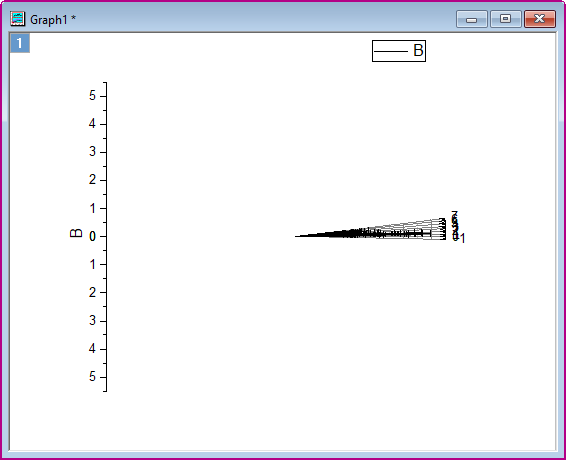
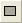

Beschnittenes Polardiagramm mit benutzerdefinierter Ausrichtung
Polar-Crop
Zusammenfassung
Dieses Tutorial zeigt Ihnen, wie Sie ein beschnittenes Polardiagramm erstellen.
Dieses Diagramm zeigt ein polares Punktdiagramm mit einer Radiantskalierung. Die Ausrichtung der Diagrammachsen ist benutzerdefiniert angepasst. Dazu ist das Diagramm beschnitten, um einen bestimmten Teil von ihm zu zeigen.
Origin-Version mind. erforderlich: 2015 SR0
Was Sie lernen werden
Dieses Tutorial zeigt Ihnen, wie Sie:
- ein Polardiagramm mit Radialachsen erstellen,
- das Polardiagramm benutzerdefiniert anpassen, z. B. ein Polardiagramm drehen und die Hilfsstrichsbeschriftungen als How to customize the polar graph, such rotate a polar graph and display tick labels as quarters,
- ein Polardiagramm beschneiden.
Schritte
Dieses Tutorial ist mit dem Sample-Projekt des Diagramms "Cropped Polar Plot with Custom Orientation" verbunden. Sie können dieses Projekt über das Lernzentrum öffnen:
- Wählen Sie im Menü Hilfe: Lernzentrum oder drücken Sie die Taste F11, um das Lernzentrum zu öffnen.
- Suchen und öffnen Sie das Projekt Polar Charts - Cropped Polar Plot with Custom Orientation unter den Diagrammbeispielen.
Polardiagramm erstellen und Achsen benutzerdefiniert anpassen
Aktivieren Sie die Arbeitsmappe Cropped Polar Plot with Custom Orientation. Markieren Sie alle Spalten in Blatt 1 und wählen Sie Zeichnen: Spezialisiert: Symbol Θ r im Hauptmenü, um ein Polardiagramm zu erstellen:
- 
Achsen im Dialog Achsen benutzerdefiniert anpassen
- Die Winkelachsen verwenden standardmäßig Grad als Einheit. Wir müssen die Winkelachsen benutzerdefiniert anpassen:
- Klicken Sie doppelt auf die Achse, um den Dialog Achsen zu öffnen. Gehen Sie zur Registerkarte Skalierung und wählen Sie Winkel im linken Bedienfeld. Erweitern Sie den Zweig Definition der Einheiten und wählen Sie für die Einheiten die Option Radiant in der Auswahlliste. Ändern Sie die Option Wert unter Große Hilfsstriche in 0,25 und die Anzahl unter Kleine Hilfsstriche in 9.
- Um die Ausrichtung der Zeichnung zu ändern, gehen Sie zur Registerkarte Zeigen und stellen Sie sicher, dass Winkel - Äußere im linken Bedienfeld ausgewählt ist. Setzen Sie Richtung auf Gegen den Uhrzeigersinn und Achsenanfang bei (Grad) auf 270, wie unten zu sehen:
- Gehen Sie zur Registerkarte Beschriftung der Hilfsstriche und setzen Sie Anzeige auf Benutzerdefiniert und Benutzerdefiniertes Format auf #/#.
- Klicken Sie auf die Schaltfläche Übernehmen, um diese Einstellungen anzuwenden.
- Passen Sie auch die Skalierung der Radialachsen an. Gehen Sie zur Registerkarte Skalierung und wählen Sie Radial im linken Bedienfeld. Ändern Sie den Wert von Bis in 5,01 (die 0,01 zeigt den letzten Hilfsstrich) und die Option Anzahl unter Kleine Hilfsstriche auf 0.
- Fügen Sie dann eine innere Radialachse hinzu.
- Klicken Sie auf der Registerkarte Zeigen auf die Schaltfläche Eine Radialachse hinzufügen oben im linken Bedienfeld. Im linken Bedienfeld wird Radial - Innere Achse 1 hinzugefügt.
- Um die Ausrichtung der neuen inneren Achse von vertikal auf horizontal zu wechseln, setzen Sie im Abschnitt Achsenposition die Referenz auf Ziffernblatt und die Option Uhrzeiten auf 3 Uhr. Aktivieren Sie die Option Negativ, um die Hilfsstrichsbeschriftung zu der gegenüberliegenden Seite der Achse zu verschieben:
- Um Hilfsstrichsbeschriftungen auf der Inneren Achse 1 hinzuzufügen, gehen Sie auf der Registerkarte Beschriftung der Hilfsstriche zur Registerkarte Anzeige und wählen Sie Durch Hilfsstriche indizierte Zeichenkette in der Auswahlliste Typ aus. Geben Sie im Bearbeitungsfeld Anzeige 0A Lv1 Lv2 Lv3 Lv4 ein.
- Wechseln Sie zur Unterregisterkarte Format und ändern Sie das Format der Hilfsstrichsbeschriftungen, wie unten zu sehen.
-
- Gehen Sie zu Spezielle Hilfsstriche und setzen Sie den Achsenanfang und das Achsenende auf Verstecken.
- Klicken Sie auf Übernehmen, um diese Einstellungen anzuwenden.
- Gehen Sie zur Registerkarte Gitternetze und legen Sie die Gitternetzlinien der Radial- und Winkelachsen folgendermaßen fest:
- Klicken Sie auf OK, um diese Einstellungen anzuwenden.
- Ziehen Sie zwei äußere Radialachsen in die Postion % von Radius = -40.
Punktdiagramm mit Minisymbolleiste benutzerdefiniert anpassen
Sie passen das Punktdiagramm mit der Minisymbolleiste benutzerdefiniert an.
- Klicken Sie auf einen Datenpunkt und legen Sie auf der Minisymbolleiste die Symbolform fest.
- Klicken Sie auf den Fehlerbalken und legen Sie auf der Minisymbolleiste fest, dass nur die positiven Y-Fehlerbalken gezeigt werden, und wählen Sie ihre Farbe.
Polardiagramm beschneiden
Im Dialog Achsen gibt es unten eine Schaltfläche Beschneiden .... Durch Klicken wird ein Dialog geöffnet, mit dem Sie einen bestimmten Bereich des Polardiagramms vergrößern und hervorheben können.
Bereich auswählen, der beschnitten werden soll
Vor dem Beschneiden des Polardiagramms können Sie das Hilfsmittel Rechteck  verwenden, um die Größe und Position der Daten im gewünschten Bereich zu erhalten.
- Klicken Sie auf die Schaltfläche Rechteck einfügen auf der Schaltfläche und ziehen Sie ein Rechteck im Diagramm auf.

- Um das Diagramm deutlich zu sehen, wenn Sie die Größe des Rechtecks anpassen, klicken Sie auf das Rechteck und klicken Sie auf der Minisymbolleiste auf die Schaltfläche Transparenz, um die Transparenz auf 60 % zu setzen.

- Passen Sie die Größe und Position des Rechtecks fest. Wenn der rechteckige Bereich fertig ist, klicken Sie doppelt, um den Dialog Objekteigenschaften zu öffnen und den Größen- und die Positionsdaten für den Bereich unter dem Rechteck zu erhalten.
Polardiagramm beschneiden
- Klicken Sie doppelt auf eine Achse, um den Dialog Achsen erneut zu öffnen. Klicken Sie auf Beschneiden, um den Dialog Verschiedenes zu öffnen. Aktivieren Sie das Kontrollkästchen Aktivieren und geben Sie die Größen- und Positionswerte ein, die Sie von dem Rechteck bekommen haben.
- Klicken Sie auf OK, um diesen Minidialog zu schließen. Klicken Sie auf OK, um den Dialog Achsen zu schließen. Das Diagramm sollte jetzt folgendermaßen aussehen.
- Wie Sie sehen können, wurde der Bereich unter dem Rechteck herausgeschnitten. Klicken Sie auf das Rechtecksobjekt und löschen Sie es. Das Diagramm sollte am Ende folgendermaßen aussehen.